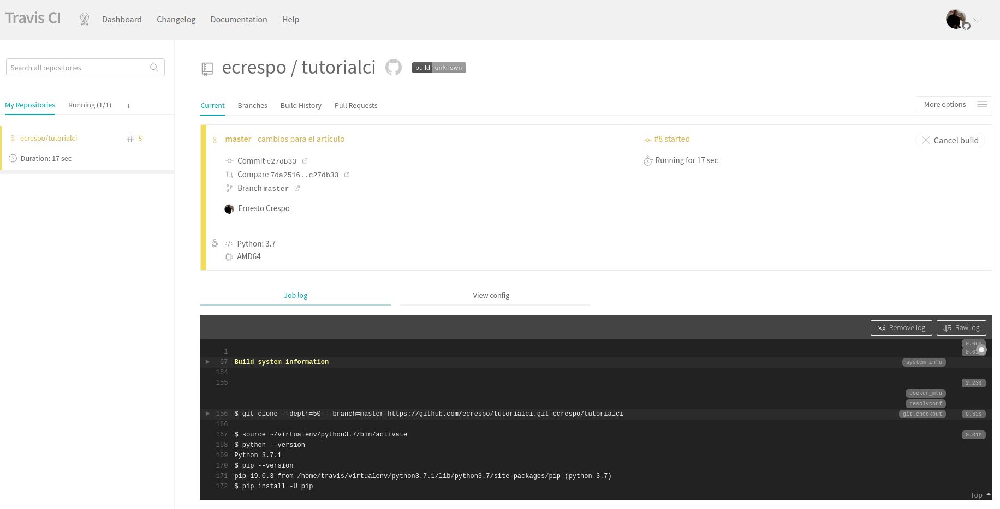
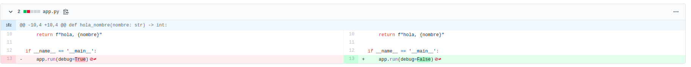
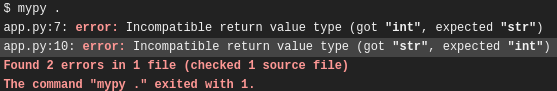
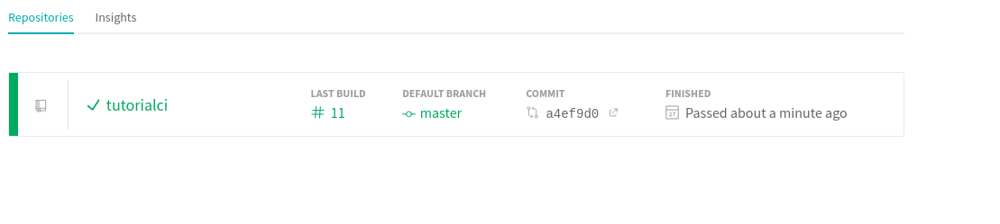

Herramientas de Python para desarrollar código seguro y de calidad.
Posted on Sat 14 March 2020 in Tutorial de Python • 4 min read
Este artículo se basa en Top Python Tools for Developing Secure, Quality Code. Se creará una aplicación básica (Hola mundo) en flask, donde se incorporará una serie de herramientas que permitirá evaluar el código cumpliendo entre otras cosas el PEP8 de Python, evaluar la seguridad del código, las herramientas y sus enlaces se muestran a continuación:
- Pipenv: Pipenv es una herramienta que tiene como objetivo llevar al mundo de Python lo mejor de todos los mundos de empaque (bundler,composer,npm, cargo,yarn, etc. Crea y gestiona automáticamente un virtualenv para sus proyectos, así como también agrega / elimina paquetes de su Pipfile a medida que instala / desinstala paquetes.
pip install pipenv
- Safety:Safety verifica sus dependencias para detectar vulnerabilidades de seguridad conocidas (Ochrona es el recomendado en el artículo original, pero como no se tiene detalles para instalar se usará Safety).
pip install safety
- Bandit: Bandit es una herramienta diseñada para encontrar problemas de seguridad comunes en el código Python.
pip3 install bandit
- Black: El formateador de código Python intransigente (cumpliendo el Pep-8).
pip install black
- Mypy: Mypy es un verificador de tipo estático opcional para Python que tiene como objetivo combinar los beneficios de la escritura dinámica (o "duck") y la escritura estática.
pip install mypy
- pylint: Verifica el cumplimiento del PEP8.
pip install pylint
- pycodestyle: Pycodestyle es una herramienta para verificar su código de Python contra algunas de las convenciones de estilo en PEP 8.
pip install pycodestyle
El código fuente que se usa en el artículo lo pueden ver en Github.
Juntando todo
En el artículo se usará como herramienta de Integración Continua a Travis-CI, aunque se puede usar cualquier otra herramienta de integración continua. Para más información sobre Travis-CI les dejo un enlace al tutorial.
Estructura de archivos:
tutorialci/
├── app.py
├── .gitignore
├── Pipfile
├── .pylintrc
├── README.md
├── requirements.txt
└── .travis.yml
Los archivos necesarios son los siguientes:
- app.py: Aplicación en Flask.
- .gitignore: Archivo que permite ignorar archivos o directorios en git.
- PipFile: Archivo pipenv.
- .pylintrc: Archivo de configuración de pylint.
- README.md: Archivo readme en markdown.
- requirements.txt: Archivo de requerimientos para ser usado con pip (pip install -r requirements.txt).
- .travis.yml: Archivo yml para configurar travis-ci del proyecto.
Archivo app.py
Este archivo crea una página web que muestra hola mundo.
from flask import Flask
app = Flask(__name__)
@app.route('/<nombre>')
def hola_mundo(nombre: str) -> str:
return hola_nombre(nombre)
def hola_nombre(nombre: str) -> int:
return f"hola, {nombre}"
if __name__ == '__main__':
app.run(debug=True)
Nota: Este código tiene errores a propósito para ver el funcionamiento de la integración continua.
Archivo Pipfile:
El archivo Pipfile tiene el siguiente contenido:
[[source]]
name = "pypi"
url = "https://pypi.org/simple"
verify_ssl = true
[dev-packages]
bandit = "*"
v = {editable = true,version = "*"}
black = "*"
mypy = "*"
safety = "*"
pycodestyle = "*"
pylint = "*"
[packages]
flask = "==0.12.2"
[requires]
python_version = "3.7"
Allí se define el nombre del paquete, los paquetes para desarrollar (están incorporados los que se mencionan anteriormente), luego los paquetes requeridos para el funcionamiento de la aplicación junto con la versión de python requerida.
Archivo .pylintrc
Al inicio el archivo estará vacío, pero el contenido al final será:
[MASTER]
disable=
C0111,
Archivo .travis.yml
El archivo travis es el encargado del flujo de integración continua, a continuación su contenido:
language: python
python:
- 3.7
install:
- pip install -U pip
- pip install pipenv
#- pip install -r requirements.txt
- pipenv install --dev
script:
- bandit ./*
- black --check .
- safety check -r requirements.txt
- mypy .
- pylint app.py
- pycodestyle app.py
Se define el lenguaje de programación y su versión, luego el procedimiento de instalación de paquetes (notar que se usa pipenv install --dev para instalar los paquetes definidos en Pipfile).
Repositorio Github
Se tiene el repositorio github:

Conexión del repositorio github con Travis-CI
Se tiene conectado el repositorio github con Travis-ci, explicación del proceso en la documentación de travis-ci.
Proceso de Integración
El proceso de inicio de integración continua se muestra a continuación:

errores
Al hacer commit y luego push a github se tiene lo siguiente en Travis-ci un error en las versiones de paquetes, se resuelve con el siguiente cambio en Pipfile:
PipFile

Bandit
El error que devuelve bandit es con respecto a que flask está corriendo en modo debug, con colocarlo en False se tiene resuelto.


Safety
Safety no devolvió error.

mypy
Los errores de Mypy son de declaración de tipos.

Los errores son en la línea 7 y 10. Hay que cambiar int en la línea 9 por str que sería la salida correcta.
Errores de PEP8
- Black: Devuelve error.
Dice que no cumple con el formato de PEP8.
- pylint

Se tiene errores en las líneas 13,1, 3,6 y 9.
Los errores en las líneas 1, 6 y 9 se resuelven colocando el código C0111 en el archivo .pylintrc, como se muestra en su sección.
- pycodestyle
Se tienen errores en las líneas 5,9,12 y 13.
Al corregir los errores la integración no devuelve errores:

El archivo final de app.py se tiene a continuación con sus cambios:

Como se puede ver, las herramientas ayudan a tener código de calidad y sin problemas de seguridad.
¡Haz tu donativo! Si te gustó el artículo puedes realizar un donativo con Bitcoin (BTC) usando la billetera digital de tu preferencia a la siguiente dirección: 17MtNybhdkA9GV3UNS6BTwPcuhjXoPrSzV
O Escaneando el código QR desde la billetera: